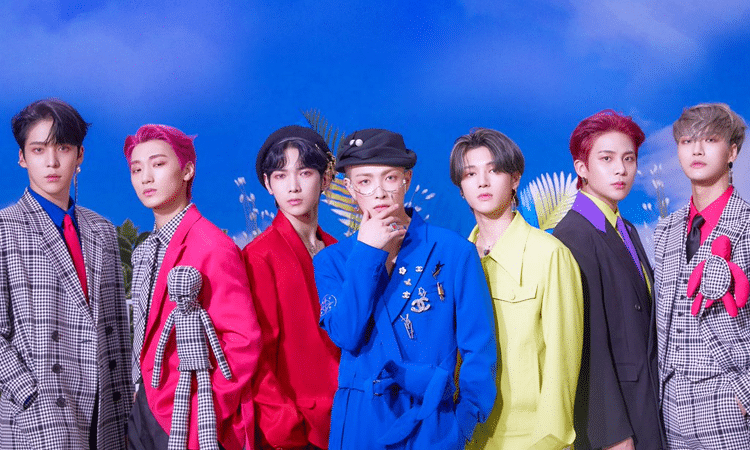
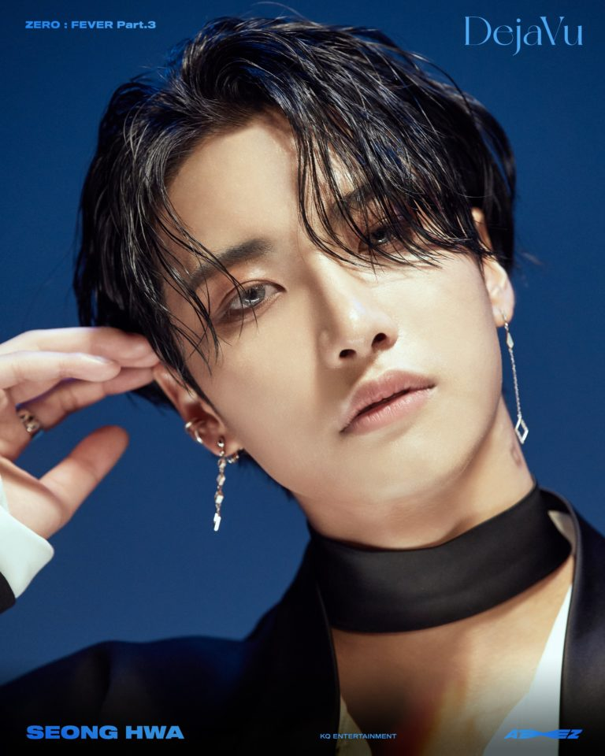
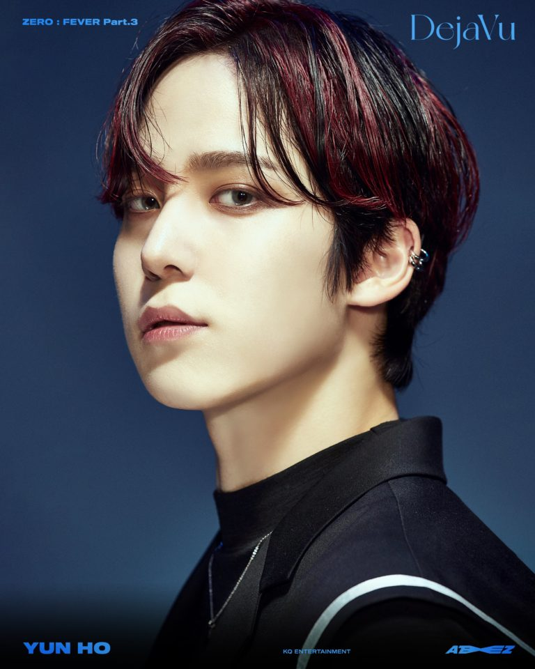
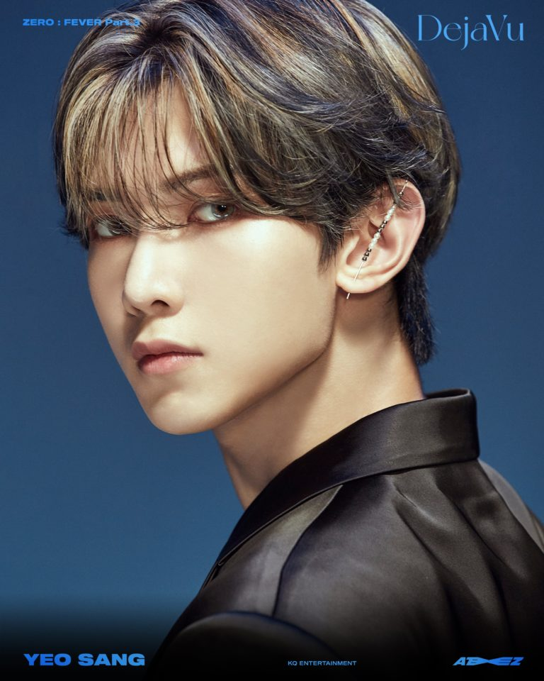
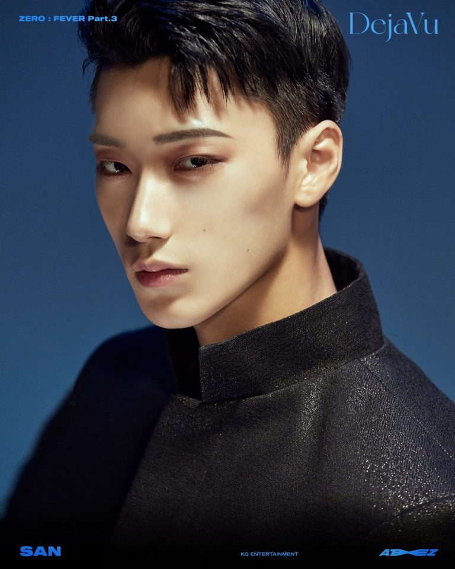
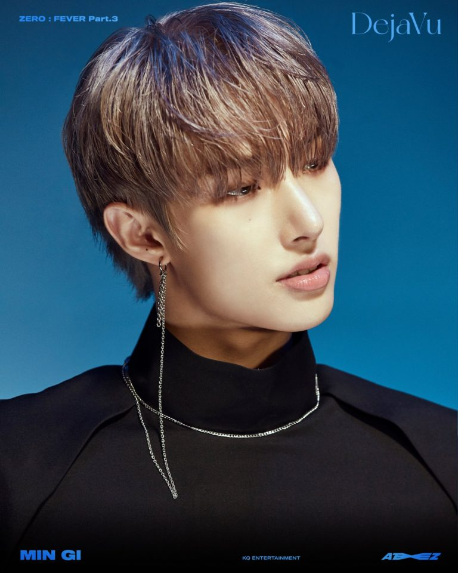
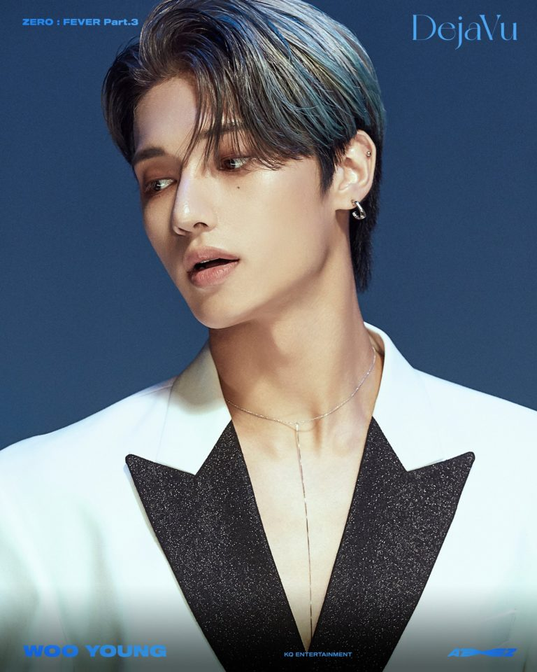
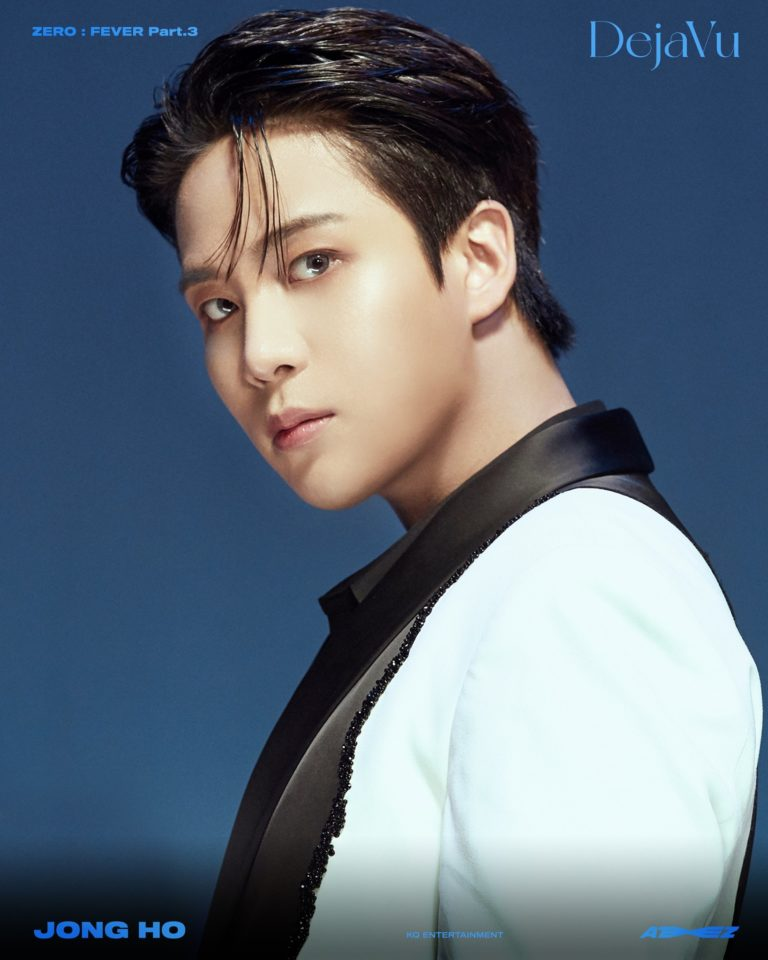

ATEEZ

Nombre:
- ATEEZ (Internacional)
- 에이티즈 (eitijeu) en Corea.
- エイティーズ (Eitīzu) en Japón.
----------------------------------------------------------------------------------------------------
Origen:
Corea del Sur.
----------------------------------------------------------------------------------------------------
Debut:
24 de Octubre del 2018
----------------------------------------------------------------------------------------------------
Lema:
8 MAKES 1 TEAM!
----------------------------------------------------------------------------------------------------
Agencia:
KQ Produce (Corea del Sur)
----------------------------------------------------------------------------------------------------
Debut
Debut con su primer mini álbum "TREASURE EP.1: All To Zero".
El 02 de octubre, revelaron a través de sus redes sociales un teaser imagen dando a conocer la fecha debut del grupo, junto a la frase "Will You Be My Friend?", el showcase tendrá lugar el 24 de octubre.
El 08 de octubre a través de sus redes sociales revelaron el nombre del mini álbum: "TREASURE EP.1: All To Zero" junto a una imagen teaser.
El 10 de octubre a través de Twitter se reveló la primera concept image del grupo para su debut. A partir del 11 de octubre, comenzaron a revelar imágenes teaser individuales para cada integrante.
El 19 de octubre se publicó el tráiler de "Intro: Long Journey", comenzando las promociones del debut.
El 24 de octubre, ATEEZ lanzó su álbum de debut “Treasure Ep.1: All to Zero” junto a los vídeos musicales de sus dos canciones principales "Pirate King" y "Treasure".
“Treasure” es una canción que encapsula el concepto de ATEEZ. Usa una mezcla de trip hop y trap para mostrar el color único de ATEEZ. “Pirate King” tiene un intenso sonido de trap con un gancho adictivo.
Integrantes:

Seong Hwa (Vocalista y Bailarín)
Hong Joong (Líder, Rapero y Bailarín)

Yun Ho (Vocalista y Bailarín)

Yeo Sang (Vocalista y Bailarín)

San (Vocalista y Bailarín)

Min Gi (Rapero y Bailarín)

Woo Young (Vocalista y Bailarín)

Jong Ho (Vocalista, Bailarín y Maknae)
|